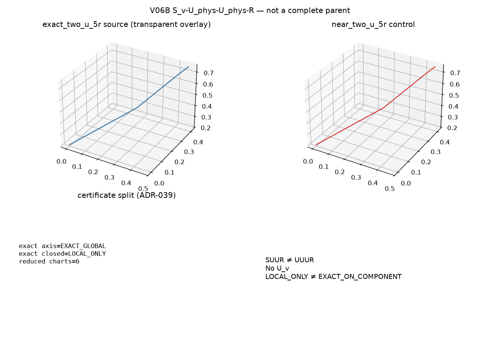

EXACT_GLOBAL is not closed-mechanism completeness. SUUR is not
UUUR and does not introduce U_v. Near control must reject.
DecompositionCertificate closed status for the exact source is
LOCAL_ONLY.| architecture | axis_aggregation | closed_mechanism | status |
|---|---|---|---|
exact_two_u_5r | EXACT_GLOBAL | LOCAL_ONLY | LOCAL_ONLY |
near_two_u_5r | REJECTED | REJECTED | REJECTED |
generic_5r | REJECTED | REJECTED | REJECTED |

Reproduce:
PYTHONPATH=src python -m grashof_workspace.spatial_experiments.v06b --outdir results/kinematic_decomposition/v06b